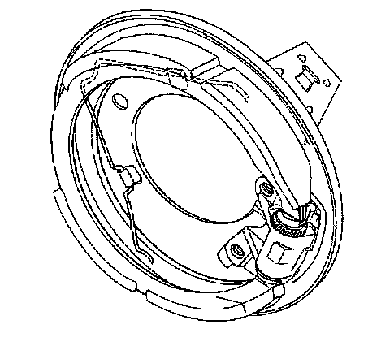
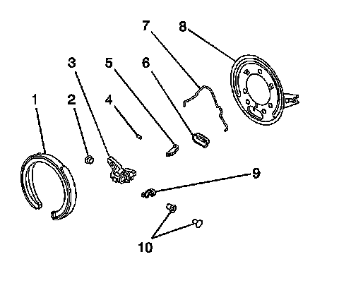
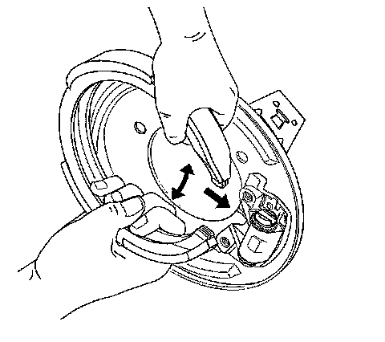

Parking Brake System: Service and Repair
Park Brake Backing Plate Replacement
Removal Procedure
1. Raise and support the vehicle. Refer to Lifting and Jacking the Vehicle (Service and Repair) .
2. Remove the rear tire and wheel assemblies. Refer to Tire and Wheel Removal and Installation (Service and Repair) .

3. Remove the rear wheel hub and bearing assembly. Refer to Rear Wheel Bearing and Hub Replacement (Rear Suspension) .
4. Rotate the park brake adjuster nut until the bolt is in the closed position.
5. Remove the park brake shoe hold down spring.

6. Remove the park brake shoe assembly (1) by grasping the shoe and spreading slightly while pulling the shoe from the actuator assembly.

7. Remove the dust cover (6).
8. Remove the 2 park brake cable bracket to knuckle mounting bolts.
9. Remove the backing plate from the knuckle.
10. Using a flat-bladed tool, move the actuator retaining tab outward and remove the actuator (3) from the backing plate (8).
Installation Procedure
1. Move the actuator retaining tab outward and install the actuator (3) to the backing plate (8).
2. Install the backing plate to the knuckle.
Notice: Refer to Fastener Notice (Fastener Notice) .
3. Install the two park brake cable bracket to knuckle mounting bolts.
Tighten the park brake cable bracket to knuckle mounting bolts to 60 N.m (44 lb ft).

4. Install the park brake shoe assembly by grasping the shoe and spreading slightly while pulling the shoe over the actuator assembly.
5. Install the park brake shoe hold down spring.
6. Adjust the park brake. Refer to Park Brake Adjustment (Adjustments) .
7. Install the rear wheel hub and bearing assembly. Refer to Rear Wheel Bearing and Hub Replacement (Rear Suspension) .
8. Install the rear tire and wheel assembly. Refer to Tire and Wheel Removal and Installation (Service and Repair) .
9. Lower the vehicle.